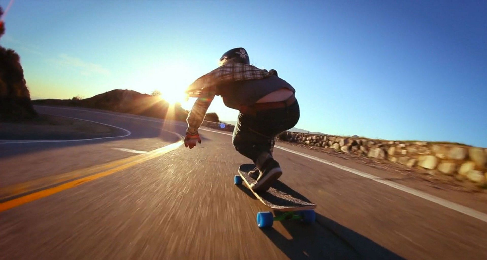

Skate
Algo que me faz sentir livre é andar de skate.
Parece que faz parte de quem sou, algo natural.
O vento na cara, a velocidade, a sensação de estar
voando baixo, essas coisas sinto andando de skate
e isso me faz tão bem.
Música
Quando tô estressado, desanimado, triste...
Meu violão é um bom amigo, até nas horas dificeis.
Não sei se conseguiria viver sem música, ela faz parte
de mim. Tocar violão, guitarra, piano, dar umas
batucadas na bateria, isso tudo é tão bom!!!

Programar
Não poderia deixar de falar de programação.
De forma resumida é mais uma das minhas paixões
que quero fazer pro resto da vida. E amo python (kkkk)!